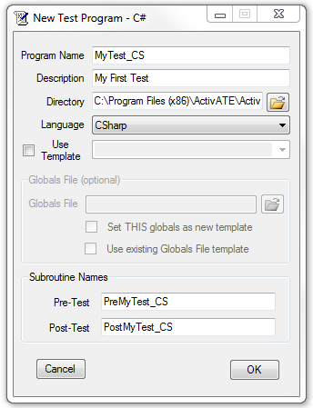
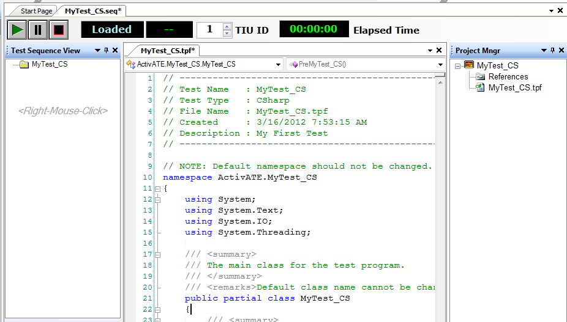

Test engineers may create VBScript, C#, or VB.Net test programs in ActivATE. Note that any combination of these test programs may be executed simultaneously. In general, the VBScript test sequence and .NET test program sequence will be exactly the same. In fact, operators will not know the difference. However, for test developers, the test program code and file structure is different. This walk-through will discuss creating and running a .NET test program.
|  |
|
After pressing OK, the ActivATE framework will create a blank C# test program that contains a partial class with the same name as the test program, a Test Sequence View, and a Project Manager Window. Adding new groups and new tests to the sequence view is exactly the same for all test programs; simply right-mouse-click in the Sequence View Window. The Project Manager window allows test developers to extend the partial class file or to add new class files.
Note the namespace. The namespace cannot be changed. This will cause compile errors. To change a file name (and the namespace) use the File→Save As menu item.

see also: Project Manager | New Groups | New Tests
Astronics Test Systems
Last updated on August 12, 2015 by D. Ignacio